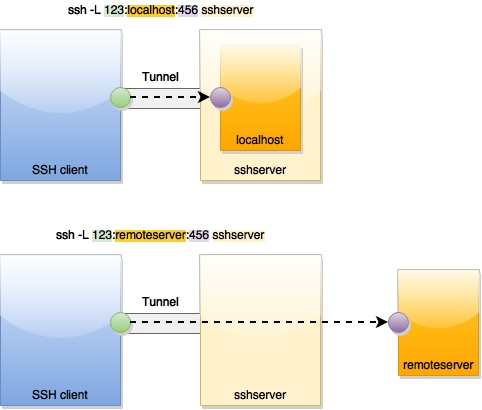

Format
ssh -N -L <local port>:<remote host>:<remote port> <SSH server>
-N: Not to execute shell command, only listen and forward.-L: Listen to<local port>on client machine.- Any data send to this
<local port>is forward to<remote host>:<remote port>. Therefore the application on<remote host>listening to<remote port>is used as if it was a local application. <remote host>is usually the same as<SSH server>, i.e.<remote host>is localhost relative to<SSH server>.<remote host>can be also be not on<SSH server>, i.e.<SSH server>is used as a bridge when data is forwarded from<SSH client>:<local port>and<remote host>:<remote port>

Example
1. Remote Debug a service on a cloud server
Forward client machines's localhost:5050 to localhost:5050
ssh -N -L 5050:localhost:5050 <username>@<ssh_server>
2. Remote Debug a service on a cloud server through a bastion host
On client machine, forward client machine's 5022 to <target_host>:22. The goal is to use client machine's 5022 port as if it was <target_host>:22. After this setting, data to local 5022 is forwarded to <target_host>:22 , therefore local becomes a local endpointwe make local 5022 to be the same you can even ssh to <target_host>:22 by ssh -p 5022 localhost.
ssh -A -N -L 5022:<target_host>:22 <username>@<ssh_server>
On client machine, forward client machine's 5050 to localhost:5050 through localhost.
ssh -p 5022 -N -L 5050:localhost:5050 localhost